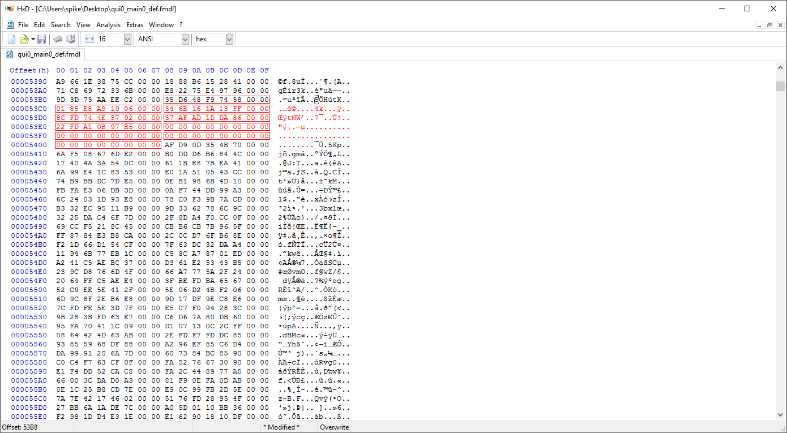
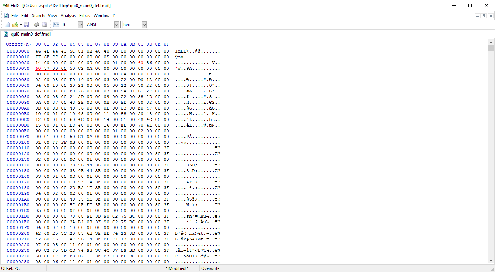

Perfect First-Person with Any Model
This tutorial is NOT recommended for beginners. If you don't have a decent understanding of how model swapping works and at least some understanding of reading hex, you will likely have trouble following this tutorial!
Images are larger than they appear. To see their full size, right-click them and click open in new tab.
What you'll need:
- A hex editor such as HxD.
- 3DS Max.
- The MaxScript from here to import TPP's models.
- Knowledge of how to extract and import TPP's models.
To get started, grab the model you want to convert to have perfect first-person. If you don't know how to do this, this isn't the tutorial for you. Start with something more basic.
Once you've found the model you want to modify, open it with your hex editor.
The section information area starts at 0x40. There are a total of 22 sections (0x16). Each hex section follows this pattern:
- 0x0-0x1 (16): Section ID
- 0x2-0x3 (16): Number of Entries
- 0x4-0x7 (32): Offset
For our purpose, we care about the sections with ID 0x1, 0x2, and 0x16. 0x1 is the mesh group definition section. 0x2 defines the objects contained within the mesh groups. 0x16 is a list of names for bones, mesh groups, materials, and possibly other things.
Getting the Mesh Group Names
If you don't already know, most of MGSV's files are Little-Endian. What does that mean? It means that the files' bytes are written backwards. This means that if a file has an integer (integers are 4 bytes) written in the file as 50 C2 0A 00, they should actually be read as 00 0A C2 50 (hex 0xAC250, decimal 705104).
You might also have noticed that I'm writing some numbers with a 0x prefix. What does this prefix mean? It just means that this is a hexadecimal number. What is a hexadecimal number? A hexadecimal number is a base-16 number. As humans, we normally use a base-10 number system, aka the decimal system. "Base-10 and Base-16? What the hell do those mean?" In simple terms, the base is the number of numbers you can place before adding a new digit to the number. The decimal system has 10 numbers you can place before you need to add a new digit. 0, 1, 2, 3, 4, 5, 6, 7, 8, and 9. Hexadecimal has 16 numbers you can place before you need to add a new digit. 0, 1, 2, 3, 4, 5, 6, 7, 8, 9, A, B, C, D, E, and F. "Why do I need to know this?" It's to let you know that hexadecimal numbers and decimal numbers are different. So when you are doing math with hex numbers, you need to know the difference. 0x10 is not decimal 10. 0x10 is decimal 16. 0x20 is decimal 32, and so on.
Now, we're going to put your understanding of hex to use. In the section information area, look at the information for the section with id 0x1. Take note of the number of entries. In the image I provided above, there are 0xA entries. From converting hex to decimal, you can figure out that 0xA is decimal 10. This means that there are 10 mesh groups in this model.
"I'm bad at converting hex to decimal. Is there an easy way to do it?" Yes, there is. Windows has you covered. The calculator that comes with Windows has a programmer mode. Programmer mode includes support for hex numbers, so you can use it to do all of the math and conversions related to hex. Click on the three lines by the mode name (probably standard or scientific) and select programmer. After that, click on hex, and you can now do all of your math in hex. It also will display the decimal number under the hex number, so it'll handle all conversions for you as well.
Ok, make sure you remember or note down the number of mesh groups. We're going to need it shortly. Now, take a look at the offset for section 0x1 (0x1980 in the example image). This offset is where the mesh groups are actually defined. If we were to go to offset 0x1980 in the file, we wouldn't get the information we need though. Why? Because the listed offset is the offset from the end of the header. The header's size is listed at offset 0x28-0x2B. So to find the offset, we need to add that number to the section's listed offset. This is pretty easy though, as the header's size is always 0x100. So using the example from the image, I would add 0x100 to 0x1980 to get 0x1A80. If you're using HxD, press ctrl + g to bring up the goto tool and enter the offset you calculated there.
There will be a number of entries for mesh groups listed here equal to the number we got earlier. Each mesh group definition follows this pattern:
- 0x0-0x1 (16): Name's Position in List at Section 0x16
- 0x2 (8): Invisibility Flag
- 0x3 (8): Unknown
- 0x4-0x7 (32): Unknown -- Always FF FF FF FF for MESH_ROOT

Right now, we only need one thing from this section. The position of the first mesh group's name in the list at 0x16. In the example image above, this number is 0x89. Now that we've got that, let's go back to the section information area.
Now we need to find the mesh group names in the list at section 0x16. How can we find them? With a little bit of math! First multiply the number we got from the mesh group defintion section by 0x8. Why? Each name in the list is 8 bytes, so this will give us the offset in the list for the mesh group names. Now add section 0x16's offset to this number. Lastly, add 0x100 for the header length. You should now have the offset for the mesh group names! (In the example from the images, the equation would be 0x89 * 0x8 + 0x4EB0 + 0x100. So the calculated offset would be 0x53F8.) Now, go to the offset you calculated.
Once you're at the offset you calculated, It's time to check if you did your math right. If the first 8 bytes you see at the offset are 35D648F974580000, congratulations! You did it right! If they are anything else, you did something wrong. Go back and retry the previous steps. Why is it wrong if the bytes aren't 35D648F974580000? Because those are the hashed bytes of the MESH_ROOT name. Every model begins with MESH_ROOT, so if it's not the first thing listed, you know you've done something wrong. Now, we're going to need the number of mesh groups we noted down earlier. Using the example in the images, the number was 0xA, so the first 10 names from the offset, including MESH_ROOT (35D648F974580000), are the names for the example model. Write down all of the mesh group names for your model somewhere.
In the example in the image above, the mesh group names would be: 35D648F974580000, 1503CAB7A9900000, B4001240D58D0000, D9E70D5771AD0000, 787529D678980000, CDB116645B430000, 72F1B480B0F10000, 76C372DA97650000, 37AFAD1DDA860000, and 22FDA10B97B50000.
Now, onto the last step before we can actually start fixing the first person; we need to import the model into 3DS Max.
Use the MaxScript linked to at the top of this page to import your model into Max. Once the model is finished importing, I recommend maximizing the perspective viewport and zooming in so you can see the model clearly.
On the left side of Max, there will be a list of objects that are named Object###. We need to figure out which mesh group each of these objects belong to. Go back to the section information area of the model in your hex editor.
Go to the offset (+ 0x100) listed at section id 0x2. This is the section that defines which objects belong to each mesh group.
The entries for object assigning (to mesh groups) follow this pattern:
- 0x0-0x3 (32): Padding
- 0x4-0x5 (16): Mesh Group ID
- 0x6-0x7 (16): Number of Objects
- 0x8-0x9 (16): Number of Preceding Objects
- 0xA-0xB (16): Entry Number
- 0xC-0xF (32): Padding
- 0x10-0x11 (16): Material ID? (Doesn't seem to have an impact on the model if changed)
- 0x12-0x1F (112): Padding
So now we can start naming the objects in Max by their mesh group! (Note: Object sort order in Max should be set to descending age.) How do we know what an object should be named? Using the information from the object assigning section, we can figure out which mesh groups they're in! In the example in the image, the first 0xE (14) objects belong to mesh group 0. Remember the list of mesh group names we wrote down earlier? We're going to need it now. Each of those mesh group names were in order of id. So 35D648F974580000 is mesh group 0. Using the other entries from the example in the images, 1503CAB7A9900000 would be mesh group 1, B4001240D58D0000 would be mesh group 2 and so on. Using the example from the images, in Max, I would name the first 14 objects 35D648F974580000. The next entry in the object assigning list says the next 5 objects belong to mesh group 1. So I would name Object015-Object019 1503CAB7A9900000. Repeat this until all of the objects are named.
When you're finished, your mesh group names should look something like the ones in this image:
Yay! We've finally figured out which objects belong to each mesh group! I'd recommend saving the Max file with the named objects somewhere. We're about to undo all of the work we did naming them, and a backup will save you a lot of time if you make a mistake.
Editing the Mesh Groups
At long last, it's time to start fixing first-person! How can we do it? TPP's first-person all works through naming mesh-groups specific names. "Wait; so you're telling me that if KojiPro had've named the mesh groups in every model the same thing, we would already have perfect first-person for every model?" Yep! But they didn't. So we have to do it ourselves now.
There are four important mesh group names for our purposes:
- MESH_ROOT: 35D648F974580000
- MESH_head: 0185E8A919060000
- MESH_body: 346B161A13FF0000
- MESH_arm: 8CFD744E57920000
"Why are these mesh groups important?" They are important for different reasons. MESH_ROOT, is exactly what it sounds like. All meshes connect to it, and it is never invisible. We do not want any objects inside MESH_ROOT. MESH_head, is again pretty obvious. Head objects go inside of it. Any objects in MESH_head will disappear both when in first-person and when using the int-scope. MESH_body disappears when using the int-scope (and possibly while in first-person). MESH_head and MESH_arm seem to be attached to MESH_body, so it is a good idea to have it. MESH_arm disappears when using the int-scope, but not when in first-person. Obviously, we want arm objects in this group.
Before we get started moving the mesh groups, we need to decide if there are any mesh groups we should keep from the original model. Obviously we want to keep MESH_ROOT, but are there any other, less obvious ones? For example, the model I've been using in the images has an internal body that doesn't need to be visible. It also has a tiny square mesh in its own mesh group that doesn't need to be visible. I'm going to leave these two mesh groups as I want objects in them to be invisible.
Once you've decided which mesh groups you want to keep (if any) we can come up with a list of all of the mesh groups we are going to be using. The list I've come up with for the model in the example images is the following:
- MESH_ROOT: 35D648F974580000
- MESH_head: 0185E8A919060000
- MESH_body: 346B161A13FF0000
- MESH_arm: 8CFD744E57920000
- Internal Body: 37AFAD1DDA860000
- Square Mesh: 22FDA10B97B50000
Your list will likely look a bit different. But at minimum, the first four mesh groups should be the same. Now, it's time to rename the objects in 3DS Max to match our new mesh groups. However, I personally find it easier to name them with a number rather than a hash. The number we name each object will reference which mesh group we are going to place it in. For example, the first 14 objects in the model in the example images are all part of the head. So they will all be named 1. As in my list, MESH_head is mesh group 1 (MESH_ROOT is mesh group 0).
Here's some tips for which mesh group an object should belong to. The eyelashes, eyes, mouth, neck, hair, and the low-poly head objects all should be placed in MESH_head. If an object contains part of the body and part of an arm, put it in MESH_arm. It will not negatively impact first person. If an object doesn't fall into the arm, head, or the additional mesh groups you've left included, it belongs in MESH_body.
When you're finished, the object names should look something like the ones in this image:
Alright, we're finally onto the hard part. It's time to hex edit the model! Go to the mesh group definition section (section id 0x1). The main thing we need to do is change the invisibility flag to represent our new mesh group list. In the example from the images, I want the first four groups to be visible and the rest to be invisible.
"I don't need all of these groups. Can I delete the extra ones?" Yes, you can. But it would create more work for us, and the amount it would reduce the filesize by is negligible. In other words, it's not worth it. "My list is bigger than the original number of mesh groups! Can I add more?" Yes you can. Cases like this are very rare, but to fix first-person on some models (Quiet's Sniper Wolf model for example), it is necessary to add an additional mesh group.
Adding a new Mesh Group
You likely won't need to do this, but if you do, it's best to do it now.
We need to note down two things. The number of mesh group entries, and the size of the section.
In the image above, you can see that there are 10 (0xA) mesh groups. Each entry is 8 bytes. So we can calculate that the section is 80 (0x50) bytes. Write the numbers for your model down somewhere.
Now we need to actually add the new entry. First, you'll need to add some bytes. Click at the end of the last entry, then go to Edit > Insert bytes.... You'll need to add 8 bytes for the new entry. The first two bytes are the id for the position in the name list at 0x16. You might be thinking "The first two bytes should be the number following the previous entry's first two bytes!" Well, if you were thinking that, you're wrong. Why? While you could technically use the next id, you'd have to bump up every following reference to the list's value by one. This would take hours to do manually. Keep in mind that every single value in the name list is already referenced somewhere in the model, and we do not want to have to have to adjust those references. "So what do I put there then?" We'll be adding a new entry to the list at 0x16. So get the number of entries for the list at 0x16 (refer to this image for an example). Using the model from the images, these bytes would be FD 00. "Shouldn't it be the number following those bytes since we're adding a new entry?" No. The first name in the list is referenced by 0, so while there are 0xFD (decimal 253) values in the list, 0xFC (decimal 252) is actually the last id that is currently being used. The next byte determines if the mesh group is visible or not. If you want it to be visible it should be 00. If not, it should be 01. The next five bytes will always be 00 00 00 FF FF. With that, your entry should be complete! (Note: if you only added one entry, you may also want to add 8 empty bytes (00) of padding to keep the line-end consistent.
{kind=link}
When you're finished, the editied section should look something like this:
We now need to write down the new number of entries and the new size. In the example above, the new number of entries is 11 (0xB) and the new size is 96 (0x60) (padding should be included in the size). We're going to need these numbers later.
For each entry, in the mesh definition section, edit the third byte to be 00 if you want the mesh group to be visible, or 01 if you want the mesh group to be invisible.
Fixing First-Person
Now it's time to move on to editing the object assigning section (section id 0x2). The object assigning section begins immediately after the mesh group definition section, so you can just go to the end of the mesh group defintion section to be at the right place.
We need to get the number of entries and the size of the section. In the example above, you can see that there are 10 (0xA) entries. Each entry is 32 bytes, making the section 320 (0x140) bytes. Write the numbers for your model down somewhere. (If you already wrote down numbers from adding a new mesh group, it may be a good idea to write these numbers in the same place.)
Got those numbers written down? Good! Now delete the entire object assigning section. "What?! Why?!" We're going to be changing the entire section, so we don't need any of the original data. Once you've deleted it, insert 0x20 bytes where it used to be. (Go to Edit > Insert bytes....)
The first 4 bytes will always be 00 00 00 00. The next two bytes will represent the mesh group the objects will be in. Reference the model in Max here. Make sure the object list in Max is set to sort by descending age. Whatever the name of the first object is should be what these two bytes will be. For example, the first object in the model from the images is named 1. This means that the two bytes will be 01 00. The next two bytes are the number of objects that should be placed in this mesh group. This is basically the number of objects in Max that have the same name in a row. Using the model from the images as an example again, the first 14 objects are all named 1. So these bytes should be 0E 00. The next two bytes are the number of preceding objects. This will always be 00 00 for the first entry. For the other entries, just add the previous entry's number of objects, to the previous entry's number of preceding objects. For example, if the previous entry had 0x5 objects, and 0x15 preceding objects, you would add those together to get 0x1A as the number of preceding objects for your new entry. The next two bytes are just the entry number. The first entry will be 01 00, the second entry will be 02 00 and so on. The next four bytes are always 00 00 00 00. Now we're onto the second line (assuming your hex editor is set to have 16 byte lines [0x0 - 0xF]). The entire next 16 bytes will all be 00. The first two bytes of the line reportedly represent the material id, but changing the value doesn't seem to have an impact on the model. And if it doesn't have an impact on the model, there's no point in setting a value. The next 14 bytes are all padding.
With that, you've completed your first entry! Now, repeat these steps to add entries until all of your objects have been been added. When you're done, the section will look something like this:
Now, write down the new number of entries and size of the section. In the image above, the section now has 8 entries and is 256 (0x100) bytes. With this, we're almost done! Head back to the section information area at the beginning of the file.
We need to edit the section information to match the changes we made. In the model from the images, the object assigning section (section id 0x2) no longer has 0xA entries. It now has 0x8 entries. We need to edit the information here to match that. We also changed the size of the section, so every offset that follows the information we changed needs to account for the size change. The model from the image's object assigning section is now 0x40 bytes smaller than it originally was. So every offset after section id 0x2 needs to be decreased by 0x40. Note: If you added another mesh group to the mesh group defintion section, you will need to change section id 0x2's offset as well. You will also need to account for that additional size change in all of the other following section offsets. You will also need to increase the number of entries for section 0x16 to account for the additional name(s) you will be adding.
Compare the following two images to see the changes I made to the model used in the images:
With the offsets adjusted, we can move onto editing the mesh group names. It'll be the same equation as we used before to get to the mesh group names, but you'll have to use section id 0x16's new offset this time. (For the model in the images, the equation is now 0x89 * 0x8 + 0x4E70 + 0x100, which equates to 0x53B8.)
You'll want to replace the name hashes with the ones in the list we made earlier. So the first four hashes should now be 35D648F974580000, 0185E8A919060000, 346B161A13FF0000, 8CFD744E57920000, followed by any mesh groups that you decided to keep (if you decided to keep any). Any of the unused mesh group names can be nulled (replaced with 00 bytes).
See the following two images for an example of what the edited mesh group names might look like:
Adding a new name to the list
If you did add a new mesh group, you'll need to add its name to the end of the name list.
To find the end of the name list, multiply the original number of entries for section id 0x16 by 8, and add section id 0x16's offset + 0x100. (The equation for the model in the images would be 0xFD * 0x8 + 0x4E70 + 0x100, which equates to 0x5758.)
There may be 8 bytes of padding after the last entry. If there is, you can just overwrite those 8 bytes with the name for your entry without impacting the file size any more than we already did. If there isn't any padding, or you added more than one entry, you'll need to remember how much you changed the file size by. (+0x8 bytes for every entry you add.)
See the following images for an example of a name added to the end of the list:
There's one last thing we need to do. There are two offsets at the top of the file that reference the model data that we need to adjust. These offsets are located at offset 0x2C and 0x30. The same changes we made to the offsets for the sections following section id 0x2, have to made to these pointers. If you changed the size of section id 0x16 by adding new names, you will need to account for that file size change when adjusting these offsets as well.
in the model from the images, I have to decrease both of these pointers by 0x40. Here's a before and after image:
With that, congratulations! We're done! Your model should now have perfect first-person. Swap it in game, and test it out!